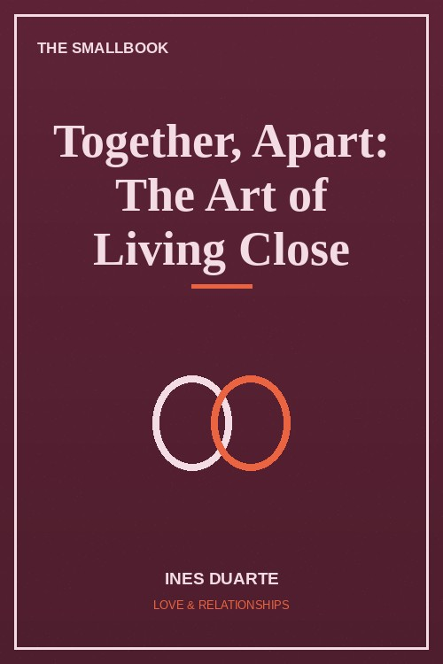

Library › Love & Relationships
Together, Apart: The Art of Living Close - Summary & Key Lessons

Why some couples thrive sharing everything, and others thrive with a door of their own.
📖 OPEN THE FULL INTERACTIVE BREAKDOWN →🌐 Read it in Hindi, Hinglish, Gujarati, Tamil & 22 more languages, with audio.
💡 The Big Idea
Architect and couples researcher Ines Duarte studies how couples physically organise shared life: beds, rooms, homes, cities. Living apart together is now common across Europe; separate bedrooms are rising everywhere; the merged-everything model is quietly no longer the default. Her finding, from hundreds of interviews, is that thriving couples share one trait regardless of floor plan: the arrangement was chosen honestly, reviewed without shame, and built to protect both sleep and longing.
🧠 The 8 Key Lessons
Lesson 1: Sleep Is Infrastructure, Treat It Like One
The Bedroom Question
Ines Duarte begins with the least romantic variable and finds it decisive: sleep quality predicts relationship satisfaction with embarrassing reliability. Snoring, opposite schedules, different temperatures quietly tax affection by day. Her thriving couples, including many in one bed, treat sleep as shared infrastructure to be engineered, separate blankets, earplugs, staggered hours, separate rooms where needed, without reading the engineering as a love metric. The exhausted call each other unloving; the rested discover they were only tired.
📖 Example: A Madrid couple on the edge of separation over his snoring moved to separate bedrooms with elaborate goodnight and morning rituals, and reported within a month feeling like newlyweds with a commute. Their friends' horror amused them; their rested affection is the chapter's closing data point. Read the full example →
⚡ Do this: Engineer one sleep variable this week without a referendum on your love: blankets, earplugs, schedule, or room. Measure affection after seven rested nights.
Lesson 2: A Room of One's Own Is a Pressure Valve
Space, Doors and Sanity
Virginia Woolf argument returns in couples research: each partner needs a territory, however small, where the other's taste and schedule do not rule. Ines Duarte's interviewees describe sheds, desks, corners and whole flats serving as the pressure valve that lets the shared space stay kind. The valve matters most in small homes and merged work from home lives, where togetherness without exit turns friction continuous. Her design advice is precise: one door each that closes, respected without interrogation.
📖 Example: A Lisbon couple in fifty square metres divided it by time rather than walls: the balcony studio hers in the mornings, his workshop corner sacred on Sundays. The arrangement, negotiated like a treaty, ended two years of low grade war over mess that was really war over sovereignty. Read the full example →
⚡ Do this: Claim and grant one sovereign corner each this week: small, explicit, respected without questions for a month.
Lesson 3: Living Apart Together, Without Apology
The LAT Couples
Millions of committed couples now keep separate homes by choice: older lovers with houses and histories, professionals in two cities, parents protecting children from new household churn. Ines Duarte finds their satisfaction equal to cohabitants when the arrangement is chosen, and corrosive when it is a stall neither dares name. The diagnostic is never the floor plan; it is whether both partners would choose it again in daylight, and whether the future has a shared chapter, however the addresses resolve.
📖 Example: A Lyon couple together nineteen years in two flats four streets apart describe the walk between homes as their courtship, permanently extended. Their children, initially baffled, now cite the arrangement as the reason their parents still flirt. Ines Duarte files them under chosen, and their file is thick with company. Read the full example →
⚡ Do this: Whatever your floor plan, hold the daylight review this month: would we choose this again, and what is our shared next chapter? Answer out loud, together.
Lesson 4: The Honesty Audit: Is This Chosen or Stalled
Chosen Versus Default
Ines Duarte's diagnostic cuts across every floor plan: thriving couples chose their arrangement and renegotiate it; struggling ones drifted into theirs and defend it from shame. She supplies the audit questions, would we choose this today, who benefits, who pays, what would we change with no audience, and reports that the audit itself, whatever it finds, improves couples, because the arrangement becomes a joint project again instead of an accusation neither dares file.
📖 Example: A couple in separate flats for a decade discovered in the audit that both were waiting for the other to propose merging, each reading the other's contentment as rejection. The merger took four months to arrange and nineteen years to mention, a ratio Ines Duarte quotes whenever readers call her book an argument for distance. It is an argument for daylight. Read the full example →
⚡ Do this: Run the audit this month: choose today, who benefits, who pays, what changes with no audience. Write the answers together.
Lesson 5: Designing Closeness Deliberately
Rituals Across Any Distance
Couples in the book who thrive at any distance share engineered rituals: the morning coffee call between flats, the Sunday cooking across time zones, the shared series watched in sync, the goodnight protocol in separate bedrooms. Ines Duarte's point is that closeness at distance is manufactured by schedule, not sustained by feeling, and the same is quietly true in shared beds, where the ritual starved couples are the frozen ones from the other books on this shelf. Distance merely makes the engineering visible.
📖 Example: A binational couple in their ninth year apart together credits a ridiculous ritual: photographing their respective breakfast plates daily. The plates have carried illnesses, promotions, griefs and jokes across two continents, an intimacy infrastructure of toast. Ines Duarte files it under the principle that rituals beat declarations at every range. Read the full example →
⚡ Do this: Install one ritual engineered for your actual floor plan this week: timed, small, and protected for ninety days.
Lesson 6: Money, Law and the Unmarried Architectures
The Practical Chapters
Ines Duarte devotes unglamorous chapters to what the arrangement means for leases, wills, medical proxies and tax, particularly for living apart and unmarried couples whom default law treats as strangers. Her reporting finds couples romantic about distance and negligent about paperwork, discovering at hospital doors that the state does not recognise their floor plan as a family. The chapters function as the book's seatbelt: unromantic, unskippable, and the difference between an arrangement and an accident waiting for an emergency.
📖 Example: A partner of fourteen years, separate flats by happy choice, was initially barred from medical decisions after an accident because no document named her. The couple's fix took one afternoon with a lawyer and now travels in their phones. Ines Duarte prints the story with the couple's blessing as the chapter's entire argument. Read the full example →
⚡ Do this: Audit your paperwork this quarter against your actual arrangement: wills, proxies, emergency contacts. One afternoon, then back to romance.
Lesson 7: Children in Multi Home Families
Families Across Addresses
Where children move between homes, through LAT parents, separation or choice, Ines Duarte finds the same variable deciding outcomes: the adults' narrative. Children told honestly, at their level, that love has this shape in their family, and given rituals that make the geography predictable, fare as well as any. Children lied to in the name of normality learn only that their perception is unreliable. Her interviewees include the now adult children of pioneers, whose verdicts close the chapter with unusual unanimity: the honesty was the home.
📖 Example: A daughter of a living apart family describes childhood by its rituals rather than its addresses: father's flat on Fridays with the good bread, the train game between homes. Questioned about damage she looks puzzled and cites her friends from merged homes with frozen parents. The arrangement, again, was never the variable. Read the full example →
⚡ Do this: If your family spans addresses, give the children the honest narrative and one geography ritual this month: predictable, named, theirs.
Lesson 8: The Future of the Couple Address
Where This Is Going
The book closes with demography: later marriages, longer lives, two careers, inherited houses and global work are all pushing couples toward plural architectures, and the culture's single template creaking under the load. Ines Duarte predicts the question of the coming decades will not be whether couples live together but whether their arrangement, whatever it is, is chosen, honest and engineered. Her last interviewee, ninety one, in her own flat, engaged to a man of ninety four in his, supplies the epitaph: we are not avoiding marriage. We are avoiding moving.
📖 Example: Registries in several European countries now record substantial minorities of committed couples at two addresses, a statistic that would have been uncollectable a generation ago because the couples hid. Ines Duarte's book is part of the unhiding, and the letters she receives, largely relieved, are its market research. Read the full example →
⚡ Do this: Whatever your decade, write your arrangement's next honest version now, while choosing it is still cheap.
✅ 5-Step Action Plan
- Engineer one sleep variable this week; reassess after seven nights.
- Claim and grant one sovereign corner each.
- Hold the daylight review of your arrangement this month.
- Build one ritual across whatever distance you keep.
- Stop defending your floor plan; start reviewing it yearly.
- If merging homes, negotiate sovereignty before square metres.
- Measure love by attention, never by shared storage.
⚠️ When This Doesn't Work
Ines Duarte writes descriptively, from interviews rather than trials; her couples self selected and her cities skew European. The honesty principle travels; the floor plans must be adapted to culture, faith and budget.
💀 The Graveyard Proves It
💬 Best Quotes from Together, Apart: The Art of Living Close
- “There is no virtuous floor plan. There is only the honest one.”
- “Closeness is a quality of attention, not a measure of shared square metres.”
- “The couples who frightened me were not apart. They were together and lying about it.”
Interactive version: mark lessons as read, listen in your language, share quote cards.